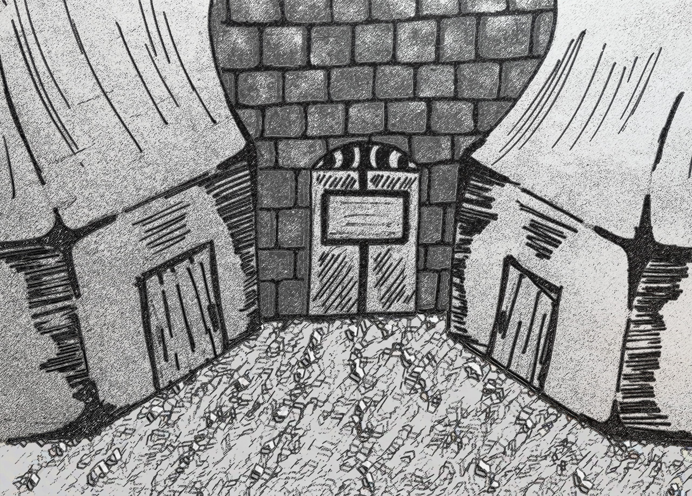

Una hermosa luna blanca me observa desde el cielo y es testigo de lo que ocurre, el rojo cubre mis manos y la cascara sin vida de varias pestes se encuentran tirados en el suelo.
Cuatro cadáveres me rodean, cuatro animales que fueron castigados, cuatro miserables criaturas que se atrevieron a quitarme mi familia.
- ¡Valentino! ¡Craso! ¡Brema! ¡Al! ¿¡Donde están!? – la voz de una mujer llama a los animales sacrificados.
- ¡Chicos! ¿¡Donde están!? – la voz se acerca a donde me encuentro.
- ¡ah! – la mujer se percata de lo que ocurrió, al verme parado en el centro de la escena.
- ¡Tu! – grita mientras me señala - ¿Qué ocurrió aquí?
- Yo los mate… - mientras respondo, no puedo evitar sonreír
Luego de responder a la pregunta de la mujer, algo me golpea contra el suelo y cae sobre mi.
- Piensa lo que dirás muchacho, si te equivocas te rebanare el cuello – Dice la mujer mientras coloca algo filoso contra mi cuello.
- ¿Por qué lo hiciste?
- Era lo único que podía hacer – digo mientras la miro a los ojos y coloco mi mano en su estomago.
- ¿¡Pero que!? – solo eso puede decir antes de salir volando.
- Era lo mas natural que alguien podía hacer en mi situación.
- ¿¡como hiciste eso!? – dice, mientras me mira con rabia.
- Ellos me quitaron mi familia, mi hogar ¿No se merecían lo mismo?
La mujer se lanza contra mi, recorriendo los 10 metros que habían entre nosotros en un parpadeo, golpeando mi estomago.
- Tu lógica es retorcida, pero no careces de potencial, no te matare. Pero a cambio tu compensaras las perdidas de mi hermandad – la mujer dice eso mientras pierdo la conciencia.
- No… decidas…. Eso tu sola…. – solo pude decir eso antes de quedar inconsciente.
Esto es simplemente un recuerdo sin sentido, el porqué repentinamente pienso en ello es un misterio incluso para mí.
Era un día frio, la luz de la luna iluminaba el patio del cuartel de los Centinelas, era mi primer año como miembro de la orden.
Salí al patio para tomar un poco de aire luego de pasar el día en la biblioteca de la orden, necesitaba un poco de aire helado para poder limpiar mi pulmones del polvo que los antiguos libros contenían, en mi busca de de conocimiento arcano me pasaba temporadas enteras encerrado en la biblioteca.
Tras leer todos los libros de la biblioteca, la gran mayoría sobre hechizos y alquimia, un libro en especial llamo mi atención. Un libro de tapa gastada que se encontraba oculto al final de uno de los estante de la biblioteca, hablaba de una extraña edificación que se encontraba en Los Prados, cerca del reino de Altaria.
Esta torre contenía un conocimiento y poder casi ilimitado.
Alquimia, nigromancia. Así como hechicerías que permitían invocar criaturas tan poderosas, que solo se creían mitos.
Necesitaba pensar sobre esa torre y como podría hacerme poseedor de sus conocimientos.
Inmerso en mis pensamientos escuche una voz que llamaba mi nombre.
- Thraxor ¿qué haces en el patio a estas horas de la noche muchacho?
El gran maestre Veteris Duoq, líder de la orden, me pregunta eso con un tono de sorpresa.
Veteris, es un anciano que siempre tiene una mirada amable, es una persona alta que siempre va vestido con una túnica roja y lleva puesto unos lentes redondos.
- Discúlpeme gran maestre Duoq, no era mi intención romper el toque de queda – mientras me disculpo hago una pequeña reverencia apoyando mi mano derecha en mi pecho.
La orden de los Centinelas tiene su toque de queda a la media noche, usualmente los únicos que pueden ignorar el toque de queda son los integrantes de alto rango y el gran maestre Duoq por supuesto.
- Te has quedado en la biblioteca hasta tarde de nuevo, ¿Verdad?
- Si, le pido disculpas de nuevo, no era mi intención.
Hago nuevamente una reverencia, a lo que el gran maestre ríe.
- Siempre has sido así joven Thraxor – dice el gran maestre mientras ríe – Jessie siempre se queja de que te la pasas todo el tiempo en la biblioteca de la orden.
Mi tutora o maestra, Jessie es quien me incorporo a la orden y decidió entrenarme, es una mujer realmente problemática.
Siempre me dice que no estoy aprovechando mi juventud y siempre me sacaba de la biblioteca, se paraba justo en frente de la puerta de la biblioteca y decía que si quería entrar primero debía vencerla.
Al principio lo intentaba sin poder vencerla, luego cada vez que hacia eso me escabullía y ingresaba por el tomo luz del techo, nunca me descubrió o tal vez simplemente fingía que no me veía. Jamás lo supe.
- ¿Encontraste algo interesante en tu incesante lectura muchacho?
- De hecho, si, algo me esta intrigando – respondo con franqueza.
- mmm ¿Y de que se trata? Tal vez pueda ayudarte a descifrar lo que te intriga – realmente debe estar aburrido, para querer saber lo que lee un simple muchacho.
- Hace unas semanas encontré un libro que habla acerca de una torre extraña y las maravillas que contiene.
- ¿La torre maldita? Y dime muchacho, ¿qué es lo que sabes hasta ahora?
- Sé que fue construida por un arquitecto llamado David y que recibió ayuda de varios lugares para terminarla. Juntando gran cantidad de conocimiento y poniéndolo en una biblioteca enorme.
- ¿Y qué es lo que te intriga entonces? – pregunta el gran maestre mientras se toca la barbilla.
- En primer lugar ¿cómo logro terminar una torre de esas proporciones en tan poco tiempo? A pesar de contar con tanta ayuda terminar una torre así en solo 5 años es imposible. Y en segundo lugar ¿donde guardo todo ese conocimiento? Si usted observa los dibujos hechos sobre la torre es imposible que tal cantidad de información entre en un cuarto de ese tamaño
- ¿Sabes muchacho? David no era un arquitecto normal – dice de forma calmada el gran maestre – Y su creación no tiene nada de normal tampoco.
- Habían rumores del uso de magia negra, pero nunca creí que fueran reales – algunas notas en el libro hablaban de cadáveres construyendo la torre
- Ciertamente, David utilizaba la nigromancia para resucitar a los trabajadores que murieran, así conseguía una mano de obra incansable. En cuanto a la biblioteca, bueno se podría decir que no se encuentra en nuestro plano existencial.
- ¿a que se refiere? Como es eso posible, el poder que se necesita para viajar a cualquier otra dimensión va mas allá de la simple nigromancia.
- Como seguro sabrás, David no construyo esa torre solo. Magos de todo tipo y gran poder ayudaron a convertir la torre en una trampa mortal.
- Entonces asi logro guardar toda esa información. Debo saber mas sobre esa torre, ¿gran maestre le importaría contarme mas sobre ese lugar?
- En lo absoluto muchacho.
Al principio lo intentaba sin poder vencerla, luego cada vez que hacia eso me escabullía y ingresaba por el tomo luz del techo, nunca me descubrió o tal vez simplemente fingía que no me veía. Jamás lo supe. - ¿Encontraste algo interesante en tu incesante lectura muchacho? - De hecho, si, algo me esta intrigando – respondo con franqueza. - mmm ¿Y de que se trata? Tal vez pueda ayudarte a descifrar lo que te intriga – realmente debe estar aburrido, para querer saber lo que lee un simple muchacho. - Hace unas semanas encontré un libro que habla acerca de una torre extraña y las maravillas que contiene. - ¿La torre maldita? Y dime muchacho, ¿qué es lo que sabes hasta ahora? - Sé que fue construida por un arquitecto llamado David y que recibió ayuda de varios lugares para terminarla. Juntando gran cantidad de conocimiento y poniéndolo en una biblioteca enorme. - ¿Y qué es lo que te intriga entonces? – pregunta el gran maestre mientras se toca la barbilla. - En primer lugar ¿cómo logro terminar una torre de esas proporciones en tan poco tiempo? A pesar de contar con tanta ayuda terminar una torre así en solo 5 años es imposible. Y en segundo lugar ¿donde guardo todo ese conocimiento? Si usted observa los dibujos hechos sobre la torre es imposible que tal cantidad de información entre en un cuarto de ese tamaño - ¿Sabes muchacho? David no era un arquitecto normal – dice de forma calmada el gran maestre – Y su creación no tiene nada de normal tampoco. - Habían rumores del uso de magia negra, pero nunca creí que fueran reales – algunas notas en el libro hablaban de cadáveres construyendo la torre - Ciertamente, David utilizaba la nigromancia para resucitar a los trabajadores que murieran, así conseguía una mano de obra incansable. En cuanto a la biblioteca, bueno se podría decir que no se encuentra en nuestro plano existencial. - ¿a que se refiere? Como es eso posible, el poder que se necesita para viajar a cualquier otra dimensión va mas allá de la simple nigromancia. - Como seguro sabrás, David no construyo esa torre solo. Magos de todo tipo y gran poder ayudaron a convertir la torre en una trampa mortal. - Entonces asi logro guardar toda esa información. Debo saber mas sobre esa torre, ¿gran maestre le importaría contarme mas sobre ese lugar? - En lo absoluto muchacho.
Quien esta molestándome tan temprano por la mañana no es otra mas que Jessie mi maestra, vestida con su uniforme de la Orden que consiste en lo que pareciera ser abrigo rojo con bordes blancos que tiene capucha.
- Vamos, como puedes decirle eso a la persona que te ah cuidado durante tanto tiempo y en tu momento de mayor necesidad te ofreció un hogar.
- Que yo sepa fui traído a la fuerza, quien provoco mi “momento de mayor necesidad” fueron los asesinos que estaban bajo tu tutela. De hecho me extraña que en el momento en que me encontraste no me mataras.
- Ciertamente, en el momento que te vi rodeado de los cuerpos de mis estudiantes pensé en diez maneras distintas de matarte. Pero al escuchar lo que dijiste, mis ganas de vengarme desaparecieron, aunque después de que me atacaras te golpee como castigo.
- Si supuse eso, de cualquier forma a donde me dirijo no es de tu incumbencia - le digo de forma directa lo que pienso.
- Vamos no digas eso Jajaja – Jessie ignoró completamente lo que digo y palmea mi espalda – conociéndote de seguro vas a la biblioteca.
- De ser cierto estaría yendo en la dirección opuesta.
- De hecho tienes razón, si, en esta dirección solo hay tres posibles opciones. O vas hacia la armería, o a la sala de conferencias. Sinceramente no creo que vayas a la armería, siempre eres reacio a utilizar armas, y a la sala de conferencia solo asisten los integrantes de alto rango como yo.
- ¿Es necesario que lo pienses en voz alta? – debe sacarse esa mala costumbre.
- Solo quedaría el estudio del gran maestre, pero ¿para que llamaría a un renacuajo como tú? – ríe mientras declara eso.
- ¿Porque no vas a tu cuarto y piensas sobre ello? – Hago señas con mi mano mientras digo “shu, shu”.
- Sabes, a veces puedes ser muy grosero – dice eso mientras me mira seriamente.
- Tu siempre eres grosera.
- Uh, buen punto. En cualquier caso se respetuoso cuando hables con el gran maestre, por alguna razón te tiene mucha estima.
No necesita ni mencionarlo, el gran maestre fue de mucha ayuda en mi búsqueda de conocimiento, ya sea histórico o arcano.
Realmente le debo bastante y si me pidió que viniera a su estudio debe ser algo importante.
- Como sea, pórtate bien Thraxor debo irme, aunque no lo parezca estoy muy ocupada – dice Jessie mientras se aleja haciendo un gesto de despedida con su mano.
Seguramente va a asaltar la cocina como siempre, su comportamiento infantil a veces parece un mal chiste.
En cualquier caso me encamino nuevamente hacia el estudio del gran maestre espero que no me haya retrasado por culpa de esa fastidiosa.
*noc**noc*
Golpeo la puerta del estudio.
- Adelante – una voz familiar me autoriza a entrar
- Con permiso.
El gran maestre se encuentra sentado enfrente de su escritorio leyendo lo que parece ser un informe de alguna misión reciente.
- Ha pasado tiempo Thraxor, ¿Cómo has estado?
- Podría decir que estuve pasando el tiempo con tranquilidad, pero le estaría mintiendo señor – digo eso con un tono algo irónico.
- Ha ha ¿Jessie sigue llevándote a sus misiones?
- Ciertamente, no entiendo el porqué pregunta si quiero acompañarla, si al fin y a cabo me llevara arrastrando.
- Es una chica bastante enérgica, supongo que eres como el hermano que nunca tuvo.
- Honestamente creo que solo se aburre y me lleva simplemente para molestarme – digo eso mientras dejo caer mis hombros.
- Entonces realmente no te aburres – el gran maestre ríe mientras dice eso.
- En cualquier caso, que necesita de mi – intentando terminar con esta charla sin sentido desvío la conversación.
- Te he llamado, porque necesito que recuperes un objeto para mi – una petición de búsqueda, para eso están los novatos, no soy un mensajero.
- Con todo respeto señor, no creo que sea un buen uso de mis habilidades el buscar un tesoro.
- Ah pero ahí te equivocas muchacho, realmente querrás ir una vez sepas de que objeto estoy hablando, y te entusiasmaras aun mas al saber donde se encuentra.
- El lugar al que iré es… - realmente espero que se refiera a ese lugar.
- Ciertamente muchacho, la torre de Amnant. Y el objeto que necesito que recuperes se llama Paradigma de lo inamovible.
- ¿El objeto mágico que detiene el paso del tiempo de su portador? – un objeto tan poderoso como ese ¿realmente existe?
- Si muchacho, según la información que reuní, el collar se encuentra en la torre maldita, resguardada por sus creadores. ¿Aun crees que este encargo es un desperdicio de tus habilidades?
- En lo absoluto señor, le pido que disculpe mi anterior comentario – la próxima vez debo escuchar antes de hablar.
- De acuerdo, necesito que salgas de inmediato, utiliza el portal hacia el bosque Altum y dirígete a la torre.
- Entendido, me marcho entonces, lo veré de nuevo cuando regrese de la torre.
- Eso espero muchacho, hasta entonces cuídate.
Al salir del estudio del gran maestre, me dirijo rápidamente a mi habitación para reunir todo lo necesario.
Finalmente podre explorar la torre que me ah tenido fascinado tanto tiempo, casi no puedo contener la emoción, mientras preparo mis cosas.
Me llevare algo de beber, y algunos ingredientes alguna yerba Bardie y hongo negro. Algo de Mulainio y oxido de metal para poder crear un poco de Termita.
Y me llevare un pequeño libro de hechizos, solo por si me olvido de alguno.
Creo que eso será todo, la mayoría de mis cosas solo las llevare en el cinturón por lo que lo único que me ocuparía la mano será el libro de hechizos.
Al terminar de alistarme, me dirijo rápidamente al patio central donde se encuentra la pequeña plataforma que me tele transportara al bosque Altum dejándome a unas horas de la torre.
Al acercarme a la plataforma soy interceptado por Jessie.
- Oye Thraxor ¿hablaste con el gran maestre? – pregunta mi maestra, con una sonrisa habitual.
- Si, de hecho ahora mismo voy camino a cumplir un encargo – al recordarlo la emoción me invade.
- Oh. Vaya que interesan… - Jessie no termina su frase, pero por alguna razón se pone seria.
- Thraxor, no quiero que te asustes, pero creo que algo malo le pasa a tu cara – diciendo eso, Jessie se acerca a mi.
- Yo no siento nada raro ¿A que te refieres? – no puedo evitar sentir curiosidad.
- Esto es algo realmente raro y da mal augurio, Thraxor – realmente parece algo serio, ¿estaré pálido? – creo….
- ¿Qué? Vamos dímelo – no puedo evitar ponerme nervioso.
- ¡Oh cielos no estaba equivocada! – exclama con vigor - ¡Estas sonriendo!
Todo se detiene, realmente me siento estúpido al seguirle la corriente y preocuparme en vano.
Realmente no se si golpearla en la cara o mandarla a volar con algún hechizo.
- Jajajajajajajajajajajajajajaja – ríe la idiota de mi maestra – nunca te vi tan feliz, realmente el encargo debió ser algo de tu agrado.
- Lastima que mi felicidad no duro mucho gracias a ti – realmente a veces la detesto tanto.
- Ya enserio, realmente me sorprendió verte sonreír renacuajo – exclama la niña frente a mi – como sea no te pierdas camino a la torre.
- ¿Como sabes que me dirijo a la torre? – realmente me sorprende lo que dijo.
- No es muy difícil saberlo, has pasado los últimos seis años obsesionado con esa torre y lo que oculta, lo único que te puede hacer sonreír así es finalmente poder ir e investigarla tu mismo.
Quien lo diría, puede que su cabeza no este realmente vacía después de todo, pero nunca pensé que tomara en cuenta todo eso.
- Que te diviertas en tu aventura intelectual – dice mi extraña maestra mientras se aleja rumbo a la patio de entrenamiento.
- Realmente, eres una persona muy extraña – esas palabras se me escapan antes de ingresar al portal.
Luego de un destello, llego al bosque Altum.
Empiezo a dirigirme hacia la torre que se ve en el horizonte.
Según recuerdo la torre tiene tres entradas y cada una dirige a una sección distinta de cada piso.
Las horas pasaron y llegué a la base de la torre tras una larga caminata.
- Finalmente, estoy aquí.
Miro con fascinación la enorme edificación, tras admirarla por un rato veo como cada piso parece un anillo, desde el segundo piso hasta el cuarto es una simetría perfecta. Salvo el quinto piso que no se encuentra en nuestra dimensión están los siete pisos.
Según el calendario, algunos anillos ya deberían estarse moviendo, cambiando los cuartos de lugar.
Si sigo admirando la torre solo perderé mas tiempo, por lo que me acerco a la puerta. Hay una inscripción tallada en obsidiana que dice:
"He aquí el Amnant, el templo del cielo y la tierra, aquellos que están en busca de tesoros de poder inimaginable y no teman a las sombras, entren y encuentren el poder que tanto anhelan."
- ciertamente increíble.
Al leer la inscripción, la oración tallada comienza a brillar mientras la puerta comienza a abrirse.
El aire frio que sale de la torre demuestra que no a sido abierta en mucho tiempo.
El pasillo frente a mi esta en total obscuridad.
- Licht… - un orbe de luz blanca se crea en la palma de mi mano, iluminando el pasillo a mi alrededor.
Llego a un salón radial con tres puertas, hay dos habitaciones y una puerta central.
La puerta de Tlaem es generalmente utilizada como contenedor de magia, crea una pequeña brecha dimensional y conecta este mundo con las pequeñas realidades de cada guardián de esta torre, en pocas palabras cada puerta lleva a un mundo distinto.
Creo que antes de enfrentar al guardián de este piso investigare un poco el salón.
Abro la puerta y dentro encuentro un cuerno de Rags sobre lo que parece ser un pequeño pedestal sobre una mesa de piedra, sobre la mesa hay, pero antes de entrar para buscarlo noto algo extraño, el suelo a los pies del pequeño pedestal se levanta un poco.
No hay duda bajo esa gran compuerta de metal hay algo que me mira fijamente esperando que me acerque lo suficiente para poder atraparme.
Quedo paralizado, porque no podía ser otra cosa mas que una araña, realmente detesto eso, pero si quiero hacer una poción Bombarda necesito ese cuerno.
Tengo que pensar cómo puedo lidiar con la araña, lo normal seria quemarla completamente junto con su nido, pero si me acerco lo suficiente me atrapará y será el fin de todo. Debo hacer que salga de ahí.
- ¿Sabes que? Al demonio esto – diciendo eso apunto con mi dedo hacia uno de los extremos de la baldosa - ¡Sarel!
Acto seguido, una pequeña concentración de calor sale de la punta de mi dedo, la araña parece asustarse y se mete aun mas en su nido. No volverás a salir.
El metal de la compuerta se derrite mientras trazo una línea con mi dedo, sellando la compuerta para siempre.
Tomo el cuerno, la llave y salgo rápidamente.
¡Ralegnoc! – cubro la puerta del cuarto de hielo, ahora ese monstruo sin importar si logra o no romper la compuerta jamás volverá a salir.
Ingreso a la habitación izquierda, dentro de la pequeña habitación hay una tablilla con una palabra escrita, al leer lo que esta escrito me percato de que se trata de un anagrama.
Luego de resolver el anagrama un ruido parecido a engranajes resuena en la pequeña habitación, al mismo tiempo la tablilla comienza a moverse, atrás de la tablilla a una especie de contenedor que en su interior tiene un
- Letavi - pronunciar esas palabras el libro y el mazo comienzan a levitar a la altura de mi cabeza.
- El llevar cosas en mis manos solo retrasaría las cosas.
Coloco las llaves en el orificio que corresponden (Aquí insertar un método usar llaves y si no las tiene que no pueda avanzar), pero sigo sin entender la palabra "Retav".
¿Qué significa eso?
Luego de pensar un poco, opte por acomodarlo al azar, sin conseguir nada.
Seguí investigando para ver si conseguia algo, encontre una palabra en Latin escrita en la tablilla que abrí en la habitación izquierda, al pensar un poco y confirmar que ambas poseían las mismas letras intente acomodar las letras en la puerta de metal para formar la misma palabra y al girar las llaves chaola la puerta finalmente cedió.
Aparentemente el anagrama consiste en una pequeña oración y las llaves que conseguí son las letras faltantes.
Luego de resolver el anagrama, la puerta se abre y delante mío se encuentra una sala que tiene un plataforma con lo que parece ser un ataúd en el centro.
- Letavi Licht - Recito nuevamente el hechizo de La esfera de luz, pero esta vez lo combino con el hechizo de levitación para que la luz me sigua y yo pueda utilizar mis dos manos, y avanzo hacia el ataúd, pero siento un extraño crujir a cada paso.
Al iluminar el suelo veo lo que causaba el crujir, esqueletos, si realmente David utilizo nigromancia para construir esta torre no me sorprende ver cadáveres desechos.
Pero si la nigromancia que utilizo David aun persiste debo ser cuidadoso, estos esqueletos dejaran de ser solo restos y se convertirán en obstáculo.
Continuo avanzando y llego hasta el ataúd las flores brillan con belleza al ser iluminadas por el orbe de luz que me sigue, dentro del ataúd se encuentra un esqueleto que tiene una gema.
*tap*……*tap*…..
Al verla puedo deducir que es el corazón de cristal que dio a David su titulo, impregnado de magia obscura es capaz de resucitar a los muertos dentro de un pequeño radio y hacerles obedecer una orden impuesta por el creador de dicha gema.
*tap*…..*tap*…..*tap*….*tap*
Eso explicaría la inscripción en el ataúd.
“Aquí yace el Maestre David Corazón de cristal, el cual en su bondad fue el responsable de la construcción de nuestro puente al cielo, nosotros protegeremos tu Corazón aun después de la misma muerte”
En cualquier caso debo apresurarme, no puedo seguir ignorando esos pasos.
*tap**tap**tap**tap*
Los sonidos de pasos se aceleran, el corazón de cristal finalmente empezó a poner en movimiento a estos esqueletos.
Lo mas obvio ahora es destrozar la fuente de energía de esos esqueletos, eso explicaría el conveniente mazo detrás de la tablilla.
Tomo el mazo y coloco un extremo apuntando al corazón de cristal, coloco mi mano sobre el extremo opuesto de la cabeza y recito.
- ¡Frak! – Al recitar el hechizo mi brazo es imbuido en magia, dándole bastante fuerza, solo empujo un poco y…
*Crash*
El cristal es hecho añicos y los esqueletos reanimados caen a los pocos segundos.
Es una tumba falsa, o eso decía el libro, el verdadero David se encuentra en la cumbre de la torre.
- Como sea mejor continuo – miro de reojo la tumba y continuo hacia el siguiente cuarto.
La simpleza del cuarto me sorprende, es un cuarto de piedra con unas pocas ventanas que iluminan la sala, los dos cuartos y una puerta central. Además de dos puertas que parecen estar hechas de ébano.
Al colocar mi mano en la puerta un escalofríos sube por mi espalda, al apoyar mi oreja en la puerta oigo un ruido que no me agrada para nada.
Tengo una ligera idea de lo que esta dentro de la habitación, y siendo sincero no tengo ni tiempo ni ganas de lidiar con lo que sea que este del otro lado de la puerta.
Veo la puerta central para ver su acertijo, un anagrama, otro anagrama. Sinceramente esta sala me esta sacando de quicio. Entonces solo queda una opción, buscare otra puerta.
En la habitación derecha encuentro un recipiente metálico, el recipiente esta repleto de arena fina.
Supongo que podría hacer algunas pequeñas botellas para llevar algunas mezclas que de seguro serán útiles.
Para crear las botellas simplemente recito un hechizo y concentro el calor suficiente en mis manos, lo único que queda es moldear hasta que tenga la forma de una botella.
Esto me recuerda a cuando empezaba a aprender a utilizar la magia, recuerdo que las primeras que moldee parecían cualquier cosa menos botellas.
………
…………..
- …Creo que me excedí – no se si será debido a que me trajo recuerdos y me perdí en ellos, pero hice mas de las que necesitaba.
Solo necesitaba tres como mucho, pero termine haciendo diez.
Como sea, utilizare las que necesite y las demás se las dejare a quien sea que entre en este cuarto, en algún futuro lejano.
- Quien seas, me debes una – digo eso a la nada y continúo con lo que falta
Dado que la puerta de ébano no va a ceder fácilmente, creare algo que me permita abrirla así sea a la fuerza.
Creare un Termita, primero mezclare el Mulainio con el oxido de metal.
Segundo, hare un adhesivo con las yerbas Bardie y pegare la mezcla de Mulainio con el oxido de metal a la punta del cuerno.
Hecho todo eso recitare él un hechizo de fuego y utilizare el cuerno como catalizador, derritiendo cuatro secciones de la puerta.
En los lugares que perforé el adhesivo creado a partir de la yerba Bardie deja un rastro viscoso, cualquiera que lo vea podría pensar que se trata de acido.
Al ceder la puerta me encuentro en un cuarto similar al anterior, como sea eso no es relevante.